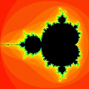

|
Contents |
Lesson 0 |
Lesson 2 |
| Code | Reference | Sidebars |
|---|---|---|
|
|
|
|
| Introduction |
This lesson introduces some of the basic concepts of GLOW, and steps through writing a simple program that views the Mandelbrot Set. At the end of this lesson, you should have an idea of the basic structure of a GLOW-based program.
| The Mandelbrot Set |
 The Mandelbrot Set is a well-known object in mathematics, a beautiful fractal-like structure that results from performing a simple computation. You can see a picture of it to the right, an interesting shape to be sure, but the real beauty of the set appears when you magnify areas around the edges of the black area. An almost infinite variety of fractal shapes appear, constantly changing and intermixing, and ever more intricate as you increase the magnification.
The math behind generating the Mandelbrot Set is fairly straightforward. I discuss it briefly in the sidebar "About the Mandelbrot Set." For the purposes of this lesson, however, I've written a simple class that performs the computation for us; we'll use it as a black box for now. You can find this class in the code files mandeldata.h and mandeldata.cpp. It computes a raw image, as an array of integer values, of any area of the Mandelbrot Set. A value of 0 means the point is in the set, traditionally denoted by coloring a pixel black. A nonzero value indicates a point outside the set. Typically, images generated of the Mandelbrot Set will set pixels different colors depending on the exact value. For simplicity, we will just color all such pixels red for now.
Source: mandeldata.h
Source: mandeldata.cpp
Sidebar: About the Mandelbrot Set
| Making a window |
Now, let's make a window that will display an image of the Mandelbrot set. To make a window, we subclass the class GlowWindow, write a constructor, and override virtual methods to produce our desired behavior.
class MandelWind : public GlowWindow { ... virtual void OnEndPaint(); ...Look at the class declaration for class MandelWind, located in the file mandelwind.h. It incorporates two data objects: a pointer to a MandelData object to handle calculation of the raw Mandelbrot data, and a member of type unsigned char*, which will point to the actual image we can render using glDrawPixels(). It also has a constructor. Note especially the existence of the virtual method OnEndPaint(). This is a method that GLOW calls when it needs to update (paint) the window. We will write this method to draw the image of the Mandelbrot Set.
The MandelWind constructor
The actual method implementations are located in the file mandelwind.cpp. First, let's look at the constructor. It first gets the pointer to the given MandelData object, and makes sure it is recalculated. It then computes an image based on the raw Mandelbrot data, by stepping through the raw data, and coloring in-set pixels (raw data == 0) black, and out-of-set pixels red.
MandelWind::MandelWind(MandelData* data) : // We first construct the window itself. GlowWindow("Mandelglow", GlowWindow::autoPosition, GlowWindow::autoPosition, data->Width(), data->Height(), Glow::rgbBuffer | Glow::doubleBuffer, Glow::noEvents) { ...Note, though, the very beginning of the constructor. It calls the constructor of its superclass, GlowWindow. This constructor sets up the window itself. The parameters are as follows: window title, x-position, y-position, window width, window height, type of frame buffer to use, and events to report. For the position parameters, note the use of the constant GlowWindow::autoPosition, which causes the window manager to position the window automatically according to its preferred heuristics. Width and height are taken from the width and height of the actual data. We aren't going to respond to any events for now, so we pass Glow::noEvents for the event mask (though that will change later). And finally, we'll use an RGB color buffer, double-buffered for the frame buffer. You can find the constants used in the last two parameters in the class Glow.
Calling the constructor for GlowWindow automatically creates a toplevel GLUT window, with a single function call. You don't need to call all the GLUT functions describing the window, and you don't need to provide callbacks-- GLOW does that automatically.
The MandelWind destructor
Let's take a brief look at the destructor for MandelWind. The destructor will never actually get called, since the window is never actually deleted-- it doesn't go away until the process terminates. However, it is instructive to know what goes on when a window is destructed.
Our destructor simply deletes the MandelData object used by the window, as well as the image storage we allocated in the constructor.
MandelWind::~MandelWind() { delete _data; delete _image; }When the base class, GlowWindow, is destructed, it automatically dismantles and removes the GLUT window and all the related storage. Therefore, if you want to destroy a GLOW window, you can simply delete the object.
It turns out, however, that there are subtle reasons why directly deleting a window object may be dangerous. For example, sometimes you may be tempted to delete the window from within one of its methods. Doing so not only carries the usual warnings about using "delete this;" but also can potentially cause crashes if an event is being handled from an object contained in the window. We'll look more closely at this issue in a later lesson. For now, however, I recommend that, instead of deleteing a window object, call the Close() method. That does a deferred-delete; the object isn't deleted immediately, but is marked "to-be-deleted", and GLOW will actually delete it later when it is safe.
The MandelWind redraw method
void MandelWind::OnEndPaint() { // Put OpenGL calls here... }Now let's look at the next function, OnEndPaint(). GLOW calls this method whenever the window needs to be redrawn. For now, don't worry about the "End" part-- that will become clear in a later lesson. (Yes, there is also an OnBeginPaint() method.) The method is pretty simple: set up the raster position and call glDrawPixels() to draw the image. GLOW automatically calls glClear() to clear the frame buffer to black for you, so you do not need to do it yourself (although you can change this behavior if you want). GLOW also handles swapping buffers automatically when you are using a double-buffered window (although this behavior can also be changed if you want).
That's it! We've now implemented a window that displays the Mandelbrot Set! Now, how do we use it?
Source: mandelwind.h
Source: mandelwind.cpp
Reference: class GlowWindow
Reference: class Glow
| Putting it together |
Let's look at the main program, in the file mandelglow.cpp. There's just one function here, main(). It's pretty short. First, after a little salutation on the command line, we call the method Glow::Init(), giving it argc and argv.
Glow::Init(argc, argv);This method performs one-time initialization of the GLOW system, including automatically calling glutInit(). It should be called at the start of every GLOW program. Next, we instantiate our window, giving it a new Mandelbrot data object to work with.
new MandelWind(new MandelData);Finally, we call Glow::MainLoop(), which enters the main event loop (essentially, it calls glutMainLoop()).
Glow::MainLoop();And we're done! If you compile and run the program, you can see that it does exactly what we expect. It creates a window, containing an image of the Mandelbrot set. The window may take a few moments to pop up, because the program first spends time computing the Mandelbrot image (in the constructor for MandelWind, remember?) You may be able to exit the program by closing the window using the window manager's close operation. (Under Motif-like window systems, double-click the box in the upper left corner.) If you can't, then you'll need to kill it using your operating system's kill command.
Note that, unlike GLUT's API, your GLOW window is a C++ object. That means you can instantiate two or more of them, just by repeating the appropriate line in main(). (Try it!) The GLOW system automatically keeps track of the different windows, and routes redraw events to the appropriate object. You don't need to juggle callbacks or keep track of window IDs.
Source: mandelglow.cpp
Reference: class Glow
| Where to go from here |
We've now seen how to create a window, and how to draw into it. You can put essentially any OpenGL drawing commands into OnEndPaint(), including 3D primitives, display lists, and so forth. Try adding additional windows to the program, containing different drawings.
You may also notice that it is possible to resize the window. If you do, the mandelbrot image remains the same size, and stays anchored to the lower left, any blank space being filled with black. There are certainly nicer ways to handle window resizing. One way is to use the class GlowFixedSizeWindow, which is a window that cannot be resized. (Technically, it's still possible to resize the window, since GLUT doesn't actually allow you to create a non-resizable window, but whenever you do resize a GlowFixedSizeWindow, it immediately snaps back to the original size.) A better way, perhaps, is to detect the window resize, and adjust the Mandelbrot image accordingly so it fills the window. We'll look at how to do this in the next lesson.
Reference: class GlowFixedSizeWindow
|
Contents |
Lesson 0 |
Lesson 2 |
The GLOW Toolkit